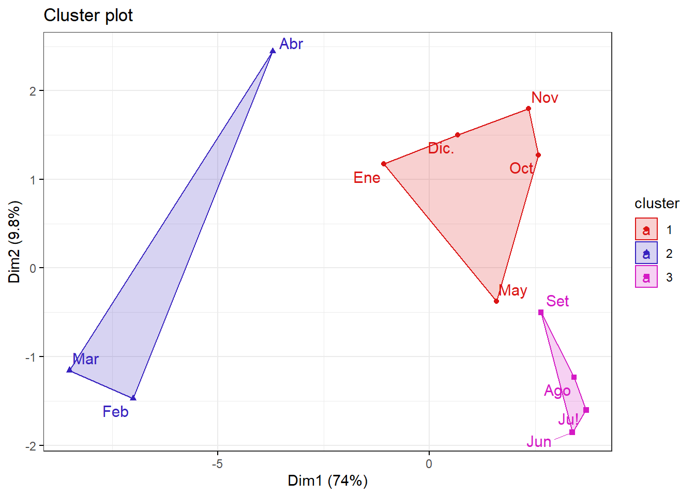
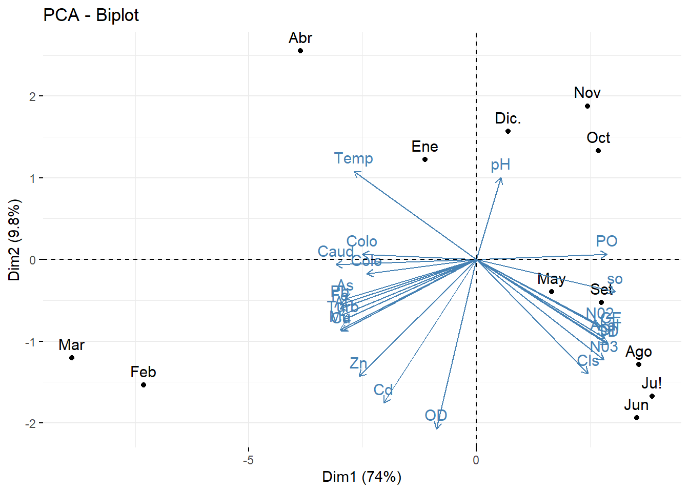

3.1Analisis de componentes principales
podemos observar que las variables se encuentran en diferente escala.
library(readxl)
datosc <- read_excel("data_media.xlsx");datosc## # A tibble: 12 x 25
## meses Caud Temp pH Turb CE OD SD Akal DI Cls so N03
## <chr> <dbl> <dbl> <dbl> <dbl> <dbl> <dbl> <dbl> <dbl> <dbl> <dbl> <dbl> <dbl>
## 1 Ene 40.6 19.2 7.7 47.2 488. 8.7 338. 95.6 211. 14.3 139. 2.98
## 2 Feb 56 20.2 7.8 302. 440 8.84 308. 91 189. 12.8 116. 2.78
## 3 Mar 71.9 20.2 7 392. 402. 8.94 278. 81.6 165. 12.8 97.5 2.54
## 4 Abr 47.6 20.1 7 100. 426. 8.51 284. 91.3 176 11.9 115. 2.41
## 5 May 26.3 18.5 8 12.5 595 8.55 380. 120. 255. 21.8 147. 3.38
## 6 Jun 23.1 17.2 7 11.1 653. 8.64 468. 120. 284. 24.8 161. 3.64
## 7 Ju! 23.5 16.6 7.8 11.1 624. 9 436. 121. 273. 18.8 165. 3.83
## 8 Ago 21.7 15.7 7 13 605. 8.76 432. 113. 260. 19.3 162. 3.58
## 9 Set 22.8 16.5 7 12.2 579. 8.7 426. 110 242. 19.9 151. 3.61
## 10 Oct 22.4 18.6 8 10.8 576. 8.64 406. 107. 246. 17.8 151. 3.38
## 11 Nov 26.6 17.8 8 53 574. 8.51 395. 106. 229 16.9 151. 3.41
## 12 Dic. 32.2 18.4 8 28.6 540. 8.7 373 104 238. 15.3 150. 3.02
## # ... with 12 more variables: N02 <dbl>, PO <dbl>, Cu <dbl>, Al <dbl>,
## # Fe <dbl>, Mu <dbl>, Pb <dbl>, Cd <dbl>, Zn <dbl>, As <dbl>, Colo <dbl>,
## # Cole <dbl> #estructura
str(datosc)## tibble [12 x 25] (S3: tbl_df/tbl/data.frame)
## $ meses: chr [1:12] "Ene" "Feb" "Mar" "Abr" ...
## $ Caud : num [1:12] 40.6 56 71.9 47.6 26.3 23.1 23.5 21.7 22.8 22.4 ...
## $ Temp : num [1:12] 19.2 20.2 20.2 20.1 18.5 17.2 16.6 15.7 16.5 18.6 ...
## $ pH : num [1:12] 7.7 7.8 7 7 8 7 7.8 7 7 8 ...
## $ Turb : num [1:12] 47.2 301.9 391.7 100.4 12.5 ...
## $ CE : num [1:12] 488 440 402 426 595 ...
## $ OD : num [1:12] 8.7 8.84 8.94 8.51 8.55 8.64 9 8.76 8.7 8.64 ...
## $ SD : num [1:12] 338 308 278 284 380 ...
## $ Akal : num [1:12] 95.6 91 81.6 91.3 120.4 ...
## $ DI : num [1:12] 211 189 165 176 255 ...
## $ Cls : num [1:12] 14.3 12.8 12.8 11.9 21.8 24.8 18.8 19.3 19.9 17.8 ...
## $ so : num [1:12] 138.6 116.5 97.5 114.6 146.7 ...
## $ N03 : num [1:12] 2.98 2.78 2.54 2.41 3.38 3.64 3.83 3.58 3.61 3.38 ...
## $ N02 : num [1:12] 0.2 0.13 0.08 0.1 0.21 0.3 0.23 0.28 0.18 0.24 ...
## $ PO : num [1:12] 0.2 0.14 0.09 0.18 0.23 0.28 0.32 0.38 0.36 0.34 ...
## $ Cu : num [1:12] 0.04 0.065 0.077 0.038 0.03 0.027 0.022 0.025 0.028 0.023 ...
## $ Al : num [1:12] 1.707 7.207 10.89 3.644 0.408 ...
## $ Fe : num [1:12] 2.176 7.595 11.37 4.471 0.434 ...
## $ Mu : num [1:12] 0.118 0.324 0.342 0.173 0.111 0.089 0.074 0.064 0.049 0.045 ...
## $ Pb : num [1:12] 0.024 0.081 0.079 0.056 0.015 0.02 0.013 0.015 0.022 0.012 ...
## $ Cd : num [1:12] 0.002 0.005 0.003 0.002 0.003 0.002 0.002 0.002 0.002 0.001 ...
## $ Zn : num [1:12] 0.372 0.611 0.641 0.343 0.468 0.323 0.273 0.28 0.28 0.171 ...
## $ As : num [1:12] 0.029 0.126 0.088 0.074 0.024 0.023 0.022 0.019 0.022 0.022 ...
## $ Colo : num [1:12] 178600 247014 208035 174967 160299 ...
## $ Cole : num [1:12] 74326 95332 90325 58096 63802 ...#convirtiendo en un dataframe
datosc=as.data.frame(datosc)
datosc## meses Caud Temp pH Turb CE OD SD Akal DI Cls so N03
## 1 Ene 40.6 19.2 7.7 47.2 487.71 8.70 337.86 95.6 211.4 14.3 138.6 2.98
## 2 Feb 56.0 20.2 7.8 301.9 440.00 8.84 307.96 91.0 189.1 12.8 116.5 2.78
## 3 Mar 71.9 20.2 7.0 391.7 401.96 8.94 278.04 81.6 164.6 12.8 97.5 2.54
## 4 Abr 47.6 20.1 7.0 100.4 426.39 8.51 284.46 91.3 176.0 11.9 114.6 2.41
## 5 May 26.3 18.5 8.0 12.5 595.00 8.55 379.64 120.4 254.8 21.8 146.7 3.38
## 6 Jun 23.1 17.2 7.0 11.1 652.68 8.64 468.32 120.5 284.2 24.8 160.9 3.64
## 7 Ju! 23.5 16.6 7.8 11.1 624.14 9.00 436.21 121.1 273.4 18.8 164.6 3.83
## 8 Ago 21.7 15.7 7.0 13.0 605.14 8.76 432.36 113.3 260.1 19.3 161.8 3.58
## 9 Set 22.8 16.5 7.0 12.2 578.86 8.70 426.11 110.0 241.8 19.9 150.7 3.61
## 10 Oct 22.4 18.6 8.0 10.8 575.79 8.64 405.96 107.3 246.4 17.8 150.9 3.38
## 11 Nov 26.6 17.8 8.0 53.0 574.04 8.51 395.36 105.6 229.0 16.9 151.1 3.41
## 12 Dic. 32.2 18.4 8.0 28.6 539.68 8.70 373.00 104.0 237.7 15.3 149.5 3.02
## N02 PO Cu Al Fe Mu Pb Cd Zn As Colo Cole
## 1 0.20 0.20 0.040 1.707 2.176 0.118 0.024 0.002 0.372 0.029 178600 74326
## 2 0.13 0.14 0.065 7.207 7.595 0.324 0.081 0.005 0.611 0.126 247014 95332
## 3 0.08 0.09 0.077 10.890 11.370 0.342 0.079 0.003 0.641 0.088 208035 90325
## 4 0.10 0.18 0.038 3.644 4.471 0.173 0.056 0.002 0.343 0.074 174967 58096
## 5 0.21 0.23 0.030 0.408 0.434 0.111 0.015 0.003 0.468 0.024 160299 63802
## 6 0.30 0.28 0.027 0.531 0.744 0.089 0.020 0.002 0.323 0.023 172396 66132
## 7 0.23 0.32 0.022 0.499 0.580 0.074 0.013 0.002 0.273 0.022 109409 39528
## 8 0.28 0.38 0.025 0.546 0.757 0.064 0.015 0.002 0.280 0.019 146956 51147
## 9 0.18 0.36 0.028 0.408 0.396 0.049 0.022 0.002 0.280 0.022 145296 47502
## 10 0.24 0.34 0.023 0.413 0.398 0.045 0.012 0.001 0.171 0.022 173663 49568
## 11 0.20 0.34 0.018 0.520 0.723 0.053 0.012 0.001 0.159 0.020 154525 57642
## 12 0.19 0.26 0.026 0.801 0.794 0.074 0.016 0.001 0.245 0.026 191987 85461#lo hacemos con el objetivo que en cluster nos salga
#en funcion de nombres de los meses
rownames(datosc)<- datosc$meses
datosc## meses Caud Temp pH Turb CE OD SD Akal DI Cls so N03
## Ene Ene 40.6 19.2 7.7 47.2 487.71 8.70 337.86 95.6 211.4 14.3 138.6 2.98
## Feb Feb 56.0 20.2 7.8 301.9 440.00 8.84 307.96 91.0 189.1 12.8 116.5 2.78
## Mar Mar 71.9 20.2 7.0 391.7 401.96 8.94 278.04 81.6 164.6 12.8 97.5 2.54
## Abr Abr 47.6 20.1 7.0 100.4 426.39 8.51 284.46 91.3 176.0 11.9 114.6 2.41
## May May 26.3 18.5 8.0 12.5 595.00 8.55 379.64 120.4 254.8 21.8 146.7 3.38
## Jun Jun 23.1 17.2 7.0 11.1 652.68 8.64 468.32 120.5 284.2 24.8 160.9 3.64
## Ju! Ju! 23.5 16.6 7.8 11.1 624.14 9.00 436.21 121.1 273.4 18.8 164.6 3.83
## Ago Ago 21.7 15.7 7.0 13.0 605.14 8.76 432.36 113.3 260.1 19.3 161.8 3.58
## Set Set 22.8 16.5 7.0 12.2 578.86 8.70 426.11 110.0 241.8 19.9 150.7 3.61
## Oct Oct 22.4 18.6 8.0 10.8 575.79 8.64 405.96 107.3 246.4 17.8 150.9 3.38
## Nov Nov 26.6 17.8 8.0 53.0 574.04 8.51 395.36 105.6 229.0 16.9 151.1 3.41
## Dic. Dic. 32.2 18.4 8.0 28.6 539.68 8.70 373.00 104.0 237.7 15.3 149.5 3.02
## N02 PO Cu Al Fe Mu Pb Cd Zn As Colo Cole
## Ene 0.20 0.20 0.040 1.707 2.176 0.118 0.024 0.002 0.372 0.029 178600 74326
## Feb 0.13 0.14 0.065 7.207 7.595 0.324 0.081 0.005 0.611 0.126 247014 95332
## Mar 0.08 0.09 0.077 10.890 11.370 0.342 0.079 0.003 0.641 0.088 208035 90325
## Abr 0.10 0.18 0.038 3.644 4.471 0.173 0.056 0.002 0.343 0.074 174967 58096
## May 0.21 0.23 0.030 0.408 0.434 0.111 0.015 0.003 0.468 0.024 160299 63802
## Jun 0.30 0.28 0.027 0.531 0.744 0.089 0.020 0.002 0.323 0.023 172396 66132
## Ju! 0.23 0.32 0.022 0.499 0.580 0.074 0.013 0.002 0.273 0.022 109409 39528
## Ago 0.28 0.38 0.025 0.546 0.757 0.064 0.015 0.002 0.280 0.019 146956 51147
## Set 0.18 0.36 0.028 0.408 0.396 0.049 0.022 0.002 0.280 0.022 145296 47502
## Oct 0.24 0.34 0.023 0.413 0.398 0.045 0.012 0.001 0.171 0.022 173663 49568
## Nov 0.20 0.34 0.018 0.520 0.723 0.053 0.012 0.001 0.159 0.020 154525 57642
## Dic. 0.19 0.26 0.026 0.801 0.794 0.074 0.016 0.001 0.245 0.026 191987 85461#eliminanos la varaible meses(cualitativa)
datosc$meses=NULL
datosc## Caud Temp pH Turb CE OD SD Akal DI Cls so N03 N02
## Ene 40.6 19.2 7.7 47.2 487.71 8.70 337.86 95.6 211.4 14.3 138.6 2.98 0.20
## Feb 56.0 20.2 7.8 301.9 440.00 8.84 307.96 91.0 189.1 12.8 116.5 2.78 0.13
## Mar 71.9 20.2 7.0 391.7 401.96 8.94 278.04 81.6 164.6 12.8 97.5 2.54 0.08
## Abr 47.6 20.1 7.0 100.4 426.39 8.51 284.46 91.3 176.0 11.9 114.6 2.41 0.10
## May 26.3 18.5 8.0 12.5 595.00 8.55 379.64 120.4 254.8 21.8 146.7 3.38 0.21
## Jun 23.1 17.2 7.0 11.1 652.68 8.64 468.32 120.5 284.2 24.8 160.9 3.64 0.30
## Ju! 23.5 16.6 7.8 11.1 624.14 9.00 436.21 121.1 273.4 18.8 164.6 3.83 0.23
## Ago 21.7 15.7 7.0 13.0 605.14 8.76 432.36 113.3 260.1 19.3 161.8 3.58 0.28
## Set 22.8 16.5 7.0 12.2 578.86 8.70 426.11 110.0 241.8 19.9 150.7 3.61 0.18
## Oct 22.4 18.6 8.0 10.8 575.79 8.64 405.96 107.3 246.4 17.8 150.9 3.38 0.24
## Nov 26.6 17.8 8.0 53.0 574.04 8.51 395.36 105.6 229.0 16.9 151.1 3.41 0.20
## Dic. 32.2 18.4 8.0 28.6 539.68 8.70 373.00 104.0 237.7 15.3 149.5 3.02 0.19
## PO Cu Al Fe Mu Pb Cd Zn As Colo Cole
## Ene 0.20 0.040 1.707 2.176 0.118 0.024 0.002 0.372 0.029 178600 74326
## Feb 0.14 0.065 7.207 7.595 0.324 0.081 0.005 0.611 0.126 247014 95332
## Mar 0.09 0.077 10.890 11.370 0.342 0.079 0.003 0.641 0.088 208035 90325
## Abr 0.18 0.038 3.644 4.471 0.173 0.056 0.002 0.343 0.074 174967 58096
## May 0.23 0.030 0.408 0.434 0.111 0.015 0.003 0.468 0.024 160299 63802
## Jun 0.28 0.027 0.531 0.744 0.089 0.020 0.002 0.323 0.023 172396 66132
## Ju! 0.32 0.022 0.499 0.580 0.074 0.013 0.002 0.273 0.022 109409 39528
## Ago 0.38 0.025 0.546 0.757 0.064 0.015 0.002 0.280 0.019 146956 51147
## Set 0.36 0.028 0.408 0.396 0.049 0.022 0.002 0.280 0.022 145296 47502
## Oct 0.34 0.023 0.413 0.398 0.045 0.012 0.001 0.171 0.022 173663 49568
## Nov 0.34 0.018 0.520 0.723 0.053 0.012 0.001 0.159 0.020 154525 57642
## Dic. 0.26 0.026 0.801 0.794 0.074 0.016 0.001 0.245 0.026 191987 85461#estandarizamos los datos porque las variables se encuentran en diferentes escalas
datosc <- as.data.frame(scale(datosc))##################################
#CLUSTER JERARQUICO AGLOMERATIVO:#
##################################
#-----------------------------------
#calculando la matriz de disimilaridad
#distanicia euclidiana
d <- dist(datosc, method = "euclidean")
#el metodo ward.d2 ,para reconstruir la matriz distancia
res.hc <- hclust(d, method = "ward.D2" ) #formacion de "n" cluster hasta 1 cluster
#observamos que son 11 etapas:
#En la etapa 1
#el individuo 10 y el individuo 11 forman un cluster
#En la entapa 2
#el individuo 8 y el individuo 9 forman un cluster
#y asi sucevamente hasta llegar a la etapa 11 donde se
#forma un solo cluster
res.hc$merge## [,1] [,2]
## [1,] -10 -11
## [2,] -8 -9
## [3,] -1 -12
## [4,] -6 2
## [5,] -7 4
## [6,] -5 1
## [7,] -2 -3
## [8,] 3 6
## [9,] -4 7
## [10,] 5 8
## [11,] 9 10#estructura:
str(res.hc)## List of 7
## $ merge : int [1:11, 1:2] -10 -8 -1 -6 -7 -5 -2 3 -4 5 ...
## $ height : num [1:11] 1.55 1.9 2.54 3.36 3.95 ...
## $ order : int [1:12] 4 2 3 7 6 8 9 1 12 5 ...
## $ labels : chr [1:12] "Ene" "Feb" "Mar" "Abr" ...
## $ method : chr "ward.D2"
## $ call : language hclust(d = d, method = "ward.D2")
## $ dist.method: chr "euclidean"
## - attr(*, "class")= chr "hclust"options(scipen = 999)#sin notacion cientifica#distancia
res.hc$height## [1] 1.554549 1.904331 2.540561 3.359679 3.950460 4.065524 4.075132
## [8] 4.573464 7.031689 7.392952 18.178469################################
#HALLANDO EL NUMERO DE CLUSTER:#
################################
#hemos considerado que un cambio brusco seria de la etapa 9
#a la etapa 10,entonces el numero de cluster es 3
library(ggplot2)
alturas <- data.frame(etapa=1:11,distancia=res.hc$height)#distancia
alturas## etapa distancia
## 1 1 1.554549
## 2 2 1.904331
## 3 3 2.540561
## 4 4 3.359679
## 5 5 3.950460
## 6 6 4.065524
## 7 7 4.075132
## 8 8 4.573464
## 9 9 7.031689
## 10 10 7.392952
## 11 11 18.178469#screeplot con las distancias
ggplot(alturas) + aes(x=etapa,y=distancia) +
geom_point() + geom_line() +
scale_x_continuous(breaks=seq(1,15)) +
geom_vline(xintercept = 9,col="red",lty=2) +
theme_bw() 
# Dividir en 3 clusters
#cluster1:
#enero,mayo,octubre,noviembre y diciembre
#cluster2:
#febrero,marzo,abril
#cluster3:
#junio,julio,agosto,setiembre
grp <- cutree(res.hc, k = 3)
grp ## Ene Feb Mar Abr May Jun Ju! Ago Set Oct Nov Dic.
## 1 2 2 2 1 3 3 3 3 1 1 1############
#DEDONGRAMA#
############
#visualizacion de los 3 cluster:
library(factoextra)## Welcome! Want to learn more? See two factoextra-related books at https://goo.gl/ve3WBafviz_dend(res.hc, k=3, cex = 0.5,
k_colors = rainbow(3), # Colores del arco iris
color_labels_by_k = TRUE,
rect=T)
#########################
#GRAFICA#ACP con CLUSTER#
#########################
#Se puede apreciar que con 2 componentes retenemos 83.8% de la inercia total
library(factoextra)
fviz_cluster(list(data = datosc, cluster = grp),
palette =c("#DB1515", "#3722BF", "#D41AC4") ,
ellipse.type = "convex", # Concentration ellipse
repel = T, # Avoid label overplotting (slow)
show.clust.cent = FALSE, ggtheme = theme_bw())
# Juntando el archivo de "datos" con la columna de "cluster"
datos.j <- cbind(datosc,grp)
str(datos.j)## 'data.frame': 12 obs. of 25 variables:
## $ Caud: num 0.372 1.32 2.299 0.803 -0.508 ...
## $ Temp: num 0.621 1.275 1.275 1.21 0.163 ...
## $ pH : num 0.37 0.581 -1.11 -1.11 1.004 ...
## $ Turb: num -0.279 1.717 2.421 0.138 -0.551 ...
## $ CE : num -0.652 -1.227 -1.686 -1.391 0.642 ...
## $ OD : num -0.0477 0.8426 1.4785 -1.2559 -1.0015 ...
## $ SD : num -0.6264 -1.1037 -1.5813 -1.4788 0.0404 ...
## $ Akal: num -0.734 -1.089 -1.812 -1.065 1.174 ...
## $ DI : num -0.506 -1.09 -1.732 -1.434 0.631 ...
## $ Cls : num -0.732 -1.111 -1.111 -1.339 1.162 ...
## $ so : num -0.158 -1.197 -2.091 -1.287 0.223 ...
## $ N03 : num -0.507 -0.942 -1.464 -1.747 0.362 ...
## $ N02 : num 0.0753 -0.9789 -1.7319 -1.4307 0.2259 ...
## $ PO : num -0.644 -1.289 -1.825 -0.859 -0.322 ...
## $ Cu : num 0.28 1.659 2.32 0.17 -0.271 ...
## $ Al : num -0.175 1.453 2.543 0.398 -0.559 ...
## $ Fe : num -0.102 1.43 2.498 0.547 -0.594 ...
## $ Mu : num -0.0809 1.9183 2.093 0.4529 -0.1488 ...
## $ Pb : num -0.246 1.943 1.866 0.982 -0.592 ...
## $ Cd : num -0.15 2.542 0.748 -0.15 0.748 ...
## $ Zn : num 0.1606 1.7057 1.8997 -0.0269 0.7812 ...
## $ As : num -0.35 2.418 1.334 0.934 -0.492 ...
## $ Colo: num 0.1935 2.1774 1.047 0.0881 -0.3373 ...
## $ Cole: num 0.5239 1.6922 1.4137 -0.3787 -0.0613 ...
## $ grp : int 1 2 2 2 1 3 3 3 3 1 ...#convirtiendo en factor la varaible "grp"
datos.j$grp <- factor(datos.j$grp)
str(datos.j)## 'data.frame': 12 obs. of 25 variables:
## $ Caud: num 0.372 1.32 2.299 0.803 -0.508 ...
## $ Temp: num 0.621 1.275 1.275 1.21 0.163 ...
## $ pH : num 0.37 0.581 -1.11 -1.11 1.004 ...
## $ Turb: num -0.279 1.717 2.421 0.138 -0.551 ...
## $ CE : num -0.652 -1.227 -1.686 -1.391 0.642 ...
## $ OD : num -0.0477 0.8426 1.4785 -1.2559 -1.0015 ...
## $ SD : num -0.6264 -1.1037 -1.5813 -1.4788 0.0404 ...
## $ Akal: num -0.734 -1.089 -1.812 -1.065 1.174 ...
## $ DI : num -0.506 -1.09 -1.732 -1.434 0.631 ...
## $ Cls : num -0.732 -1.111 -1.111 -1.339 1.162 ...
## $ so : num -0.158 -1.197 -2.091 -1.287 0.223 ...
## $ N03 : num -0.507 -0.942 -1.464 -1.747 0.362 ...
## $ N02 : num 0.0753 -0.9789 -1.7319 -1.4307 0.2259 ...
## $ PO : num -0.644 -1.289 -1.825 -0.859 -0.322 ...
## $ Cu : num 0.28 1.659 2.32 0.17 -0.271 ...
## $ Al : num -0.175 1.453 2.543 0.398 -0.559 ...
## $ Fe : num -0.102 1.43 2.498 0.547 -0.594 ...
## $ Mu : num -0.0809 1.9183 2.093 0.4529 -0.1488 ...
## $ Pb : num -0.246 1.943 1.866 0.982 -0.592 ...
## $ Cd : num -0.15 2.542 0.748 -0.15 0.748 ...
## $ Zn : num 0.1606 1.7057 1.8997 -0.0269 0.7812 ...
## $ As : num -0.35 2.418 1.334 0.934 -0.492 ...
## $ Colo: num 0.1935 2.1774 1.047 0.0881 -0.3373 ...
## $ Cole: num 0.5239 1.6922 1.4137 -0.3787 -0.0613 ...
## $ grp : Factor w/ 3 levels "1","2","3": 1 2 2 2 1 3 3 3 3 1 ...#Si deseamos exportar :
# write.csv(datos.j,"Compras con Jerarquico Aglomerativo.csv")#CORROBORANDO
# Análisis de Componentes Principales con el paquete ade4
library(ade4)
#Usando 3 componentes
acp <- dudi.pca(datosc,scannf=FALSE,nf=3)
summary(acp) ## Class: pca dudi
## Call: dudi.pca(df = datosc, scannf = FALSE, nf = 3)
##
## Total inertia: 24
##
## Eigenvalues:
## Ax1 Ax2 Ax3 Ax4 Ax5
## 17.7541 2.3548 1.3683 0.9189 0.5800
##
## Projected inertia (%):
## Ax1 Ax2 Ax3 Ax4 Ax5
## 73.976 9.812 5.701 3.829 2.417
##
## Cumulative projected inertia (%):
## Ax1 Ax1:2 Ax1:3 Ax1:4 Ax1:5
## 73.98 83.79 89.49 93.32 95.73
##
## (Only 5 dimensions (out of 11) are shown)# Valores propios
#el criterio de la media:
#estamos trabajando con la matriz correlacion cada variable deberia retener
#1% de la inercia total , nos quedamos con los 3 primeros autovalores
#que son mayores a 1.
acp$eig ## [1] 17.75412281 2.35476144 1.36828719 0.91885927 0.58004727 0.40691705
## [7] 0.24251967 0.16344726 0.11008407 0.06970343 0.03125052# con 3 componetes podemos explicar las demas variables
#reteniendo 89.49% de la inercia total
inertia.dudi(acp)## Inertia information:
## Call: inertia.dudi(x = acp)
##
## Decomposition of total inertia:
## inertia cum cum(%)
## Ax1 17.75412 17.75 73.98
## Ax2 2.35476 20.11 83.79
## Ax3 1.36829 21.48 89.49
## Ax4 0.91886 22.40 93.32
## Ax5 0.58005 22.98 95.73
## Ax6 0.40692 23.38 97.43
## Ax7 0.24252 23.63 98.44
## Ax8 0.16345 23.79 99.12
## Ax9 0.11008 23.90 99.58
## Ax10 0.06970 23.97 99.87
## Ax11 0.03125 24.00 100.00# Correlaciones entre las variables y los componentes
acp$co[c(1,2,3)] ## Comp1 Comp2 Comp3
## Caud -0.9856905 -0.01901796 0.07578045
## Temp -0.8575730 0.34464942 -0.26784995
## pH 0.1718367 0.32044552 -0.74235041
## Turb -0.9346113 -0.23625366 0.04170687
## CE 0.9441237 -0.27906809 -0.12008220
## OD -0.2805474 -0.66047211 0.18988850
## SD 0.9217281 -0.33148387 -0.01124840
## Akal 0.9013802 -0.30784486 -0.16592703
## DI 0.9190383 -0.32601318 -0.17526601
## Cls 0.7834060 -0.44555826 -0.13405671
## so 0.9720223 -0.12524082 -0.11183695
## N03 0.8933136 -0.39175400 -0.02728335
## N02 0.8656142 -0.26140158 -0.19080927
## PO 0.9171172 0.02090579 0.18088859
## Cu -0.9478302 -0.27917688 0.01341109
## Al -0.9482153 -0.21768133 0.12213858
## Fe -0.9559193 -0.19131422 0.14078444
## Mu -0.9553130 -0.27329191 -0.04917357
## Pb -0.9570670 -0.17625217 0.09659005
## Cd -0.6493169 -0.55943616 -0.26456602
## Zn -0.8225078 -0.45618080 -0.15216823
## As -0.9213033 -0.15271183 -0.06553008
## Colo -0.8002671 0.02046972 -0.42279859
## Cole -0.7701392 -0.05606211 -0.45376503##############
#componente1:#
##############
#caudal
#temp
#Turb
#CE
#SD
#Akal
#Di
#Cls
#so
#NO3
#NO2
#PO
#Cu
#Al
#Fe
#Mu
#Pb
#Cd
#Zn
#As
#Colo
#Cole
##############
#componente2:#
##############
#OD
##############
#componente3:#
##############
#pH# Segunda forma
#podemos observar que todos los elementos estan asociados mas a la
#dimension 1,excepto "pH" y "OD" que no se sabe con exactitud si pertenece
#a la dimension 1 o a la dimension2 de manera visual, pero con nuestra matriz de
#correlacion ya determinamos la variable "pH" pertenece al componente3
#y la variable "OD" pertenece al componente2
library(factoextra)
fviz_pca_var(acp, col.var="steelblue")+theme_minimal()
#biplot
library(factoextra)
fviz_pca_biplot(acp, repel = F,
col.var = "steelblue",
col.ind = "black" )
# Grafica de Valores propios - ScreePlot
#El primer componente retiene 74% de la inercia total
#El segundo componete retiene 9.8% de la inercia total
#El tercer componente retiene 5.7% de la inercia total
fviz_eig(acp, addlabels=TRUE, hjust = -0.3,
barfill="white", barcolor ="darkblue",
linecolor ="red") + ylim(0,80) + theme_minimal() 
# Scores o Puntuaciones de cada individuo
acp$li[1:10,]## Axis1 Axis2 Axis3
## Ene -1.127415 1.2241429 -0.4215330
## Feb -7.321424 -1.5374149 -1.7252348
## Mar -8.892270 -1.2061457 1.2481771
## Abr -3.864966 2.5559978 1.5588401
## May 1.653208 -0.3952227 -1.8173027
## Jun 3.526615 -1.9367091 -0.4606773
## Ju! 3.869064 -1.6735475 0.6922911
## Ago 3.572872 -1.2874593 1.1904835
## Set 2.750543 -0.5237799 1.5165983
## Oct 2.683794 1.3317449 -0.4582014# Gráfica de individuos sobre el primer plano de componentes
s.label(acp$li,clabel=0.7,grid=FALSE,boxes=FALSE)